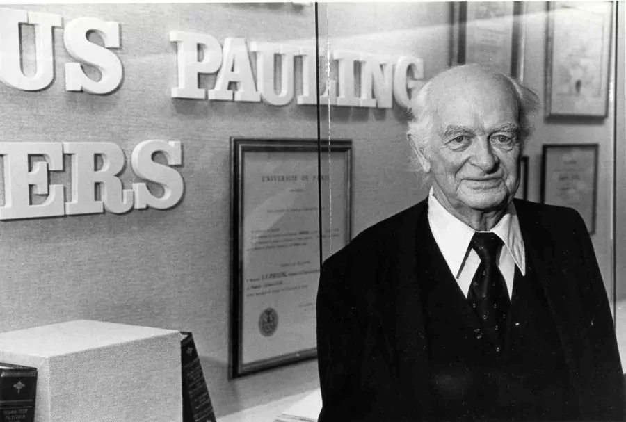

Известна благодаря: Открыла полоний и радий, выделив радиоактивные изотопы. Высшие награды: Нобелевская премия по физике (1903 г.) и химии (1911 г.). Мария Кюри получила общее образование в местных школах и некоторое научное образование от своего отца. Ее ранние эксперименты вместе с мужем, Пьером Кюри, проводились в плохо оборудованной лаборатории и в сложных условиях. Помимо проведения исследований, им приходилось обучать студентов, чтобы заработать на жизнь. В конце XIX века Мария Кюри изобрела технику выделения радия из радиоактивных остатков в достаточных количествах. Это позволило ей детально изучить терапевтические свойства этого элемента. Ее работа упоминалась во многих научных журналах, и она получила множество почетных научных и юридических степеней, а также почетное членство в учреждениях по всему миру. В 1903 году Мария Кюри и ее муж были удостоены Нобелевской премии по физике за разработку теории "радиоактивности" - термина, который она придумала. В 1911 году она была удостоена Нобелевской премии по химии за открытие двух радиоактивных элементов: полония и радия. Мария Кюри стала первой женщиной, получившей Нобелевскую премию, и единственной женщиной, получившей премию в двух разных областях. Она не запатентовала свое открытие и получила незначительную выгоду от зарождающегося бизнеса по разработке радия. Во время Первой мировой войны Кюри разработала технологию для мобильных рентгеновских аппаратов, которые можно было использовать для диагностики ранений на фронте. Эти аппараты, известные как Petits Curies, похожи на те, что используются сегодня в аппаратах для рентгеноскопии, которые позволяют врачам анализировать движущиеся изображения в организме, например, движения при глотании или насосную функцию сердца. В целом, вклад Марии Кюри в науку был огромен. Помимо необычных исследований, она оказала большое влияние на последующие поколения химиков и физиков-ядерщиков.
2. Лайнус Полинг (1901 – 1994)
Известен: Описание природы химической связи.Высшие награды: Нобелевская премия по химии (1954 г.), Национальная медаль науки (1974 г.). Лайнус Полинг, несомненно, был одним из величайших ученых 20-го века. Он был харизматичным оратором, который мог сделать самые сложные теории интересными даже для тех, кто ничего не знал о передовой науке. В возрасте 20 лет он начал публиковать в научных журналах работы о химической связи. К 28 годам он опубликовал пять правил, описывающих кристаллические структуры ионных соединений. Эти правила касаются Электростатическая прочность связи Кристаллы с разными катионами Отношение радиуса катиона к радиусу аниона Правило экономии Совместное использование граней, граней и углов многогранника В возрасте 37 лет Полинг завершил работу над своим знаменитым учебником "Природа химической связи и строение молекул и кристаллов", за который он получил Нобелевскую премию по химии 1954 года. Он считается самой влиятельной книгой по химии 20-го века. За три десятилетия книга была процитирована более 16 100 раз. Полинг также изучал сложные структуры биологических молекул и описал жизненно важную роль альфа-спирали и бета-слоя во вторичной структуре белков. Его подход объединил методы и результаты квантовой химии, молекулярной модели, квантовой химии и рентгеновской кристаллографии. За всю свою карьеру Полинг опубликовал более 1200 книг и статей, из которых около 840 касались научных тем. Кроме того, Полинг был удостоен в 1962 году Нобелевской премии мира за то, что выступал против любых военных действий как средства решения международных конфликтов. Он является единственным человеком, удостоенным двух не разделенных Нобелевских премий в разных областях.
3. Дороти Ходжкин (1910 - 1994)
Известена: разработкой рентгеновской кристаллографии и определением структуры инсулина. Высшая награда: Нобелевская премия по химии (1964 г.), Золотая медаль им. М. В. Ломоносова (1982 г.). Щедрая, скромная и трудолюбивая Дороти Ходжкин на протяжении всей своей 50-летней карьеры десятилетиями занималась развитием метода рентгеновской кристаллографии для определения атомной и молекулярной структуры кристаллов. Во время работы над докторской диссертацией, в Ньюнхемском колледже она познакомилась с методами рентгеновской кристаллографии для определения структуры белков. Она работала под руководством Джона Десмонда Бернала. В 1937 году она получила степень доктора философии за кристаллографическое исследование кристаллов стероидов. С этого момента расшифровка структуры биологически важных соединений стала делом ее жизни. В 1945 году Ходжкин опубликовала первую трехмерную структуру стероида, холестерилйодида. В том же году она раскрыла структуру пенициллина, показав (вопреки тогдашнему научному мнению), что он состоит из β-лактамного кольца. В 1948 году Ходжкин изучала витамин В12 и поняла, что его структуру можно определить с помощью метода рентгеновской кристаллографии. Она потратила годы, работая над изображениями дифракции рентгеновских лучей, обширными вычислениями и точным анализом. К 1955 году она успешно определила сложную структуру витамина В12. За эту работу Ходжкин была удостоена Нобелевской премии по химии 1964 года
4. Альфред Нобель (1833 - 1896)
Известен: изобрел динамит и оставил свое состояние институту Нобелевской премии. Высшая награда: памятник Нобелю. С детства Альфред Нобель увлекался английской литературой, физикой и химией. В возрасте 18 лет он отправился за границу для дальнейшего обучения химической инженерии. Он работал в частной лаборатории Теофиля-Жюля Пелуза. Там он узнал о взрывчатой жидкости под названием нитроглицерин. Нитроглицерин был создан путем смешивания глицерина с азотной и серной кислотой. Это было очень опасно для любого практического применения. В 1863 году Нобель сосредоточился на производстве нитроглицерина в качестве взрывчатого вещества. Он экспериментировал с различными химическими веществами и в конце концов обнаружил, что нитроглицерин и кизельгур вместе образуют уникальную пасту, которую можно легко сформировать в стержни. Это было безопаснее и удобнее в обращении. В 1867 году Нобель запатентовал эту смесь как "динамит". Он также изобрел взрывной колпачок (детонатор), который можно было поджечь с помощью фитиля. Он внес заметный вклад в развитие взрывных технологий (таких как гелигнит и баллистит) и различных химических изобретений, включая такие материалы, как искусственный шелк и синтетический каучук. К 1896 году у него было 355 патентов. Когда Альфред умер, он завещал свое состояние (31 225 000 шведских крон) институту Нобелевской премии. Эти деньги должны были быть использованы для присуждения Нобелевских премий по химии, физике, литературе, миру, физиологии или медицине. Премии рассматриваются как продолжение интересов Альфреда Нобеля.
5. Розалинд Франклин (1920 - 1958)
Известена: обнаружением двойной спиральной структуры ДНК и тонкой структуры угля и графита. Альма-матер: Кембриджский университет (доктор философии). Розалинд Франклин родилась в богатой и влиятельной британской еврейской семье и с раннего детства проявляла исключительный интеллект. В юном возрасте она хотела стать ученым. В 1945 году она получила степень доктора философии за "физическую химию твердых органических коллоидов с особым упором на уголь". Через год она была назначена в Центральную государственную химическую лабораторию в Париже, где изучила методы кристаллографии и рентгеновской дифракции. Франклин применила эти методы для получения ключевых знаний о структуре ДНК и РНК. Она также применила их к углям и другим углеродистым соединениям, чтобы узнать, какие изменения происходят в расположении атомов при превращении этих соединений в графит. Франклин опубликовала множество статей об этой работе, которые в конечном итоге стали важной частью мейнстрима химии и физики углерода и угля. Она также ввела термины графитирующий и неграфитирующий углерод - две категории углерода, образующегося при пиролизе органических материалов. Если ее вклад в развитие угля и графита был оценен при жизни, то ее роль в открытии структуры ДНК осталась непризнанной при жизни. По мнению молекулярного биолога Джеймса Уотсона, который предложил структуру двойной спирали молекулы ДНК, Франклин в идеале должна была бы получить Нобелевскую премию по химии. Некоторые ученые называют Франклин "темной леди ДНК", "забытой героиней" и "обиженной героиней".